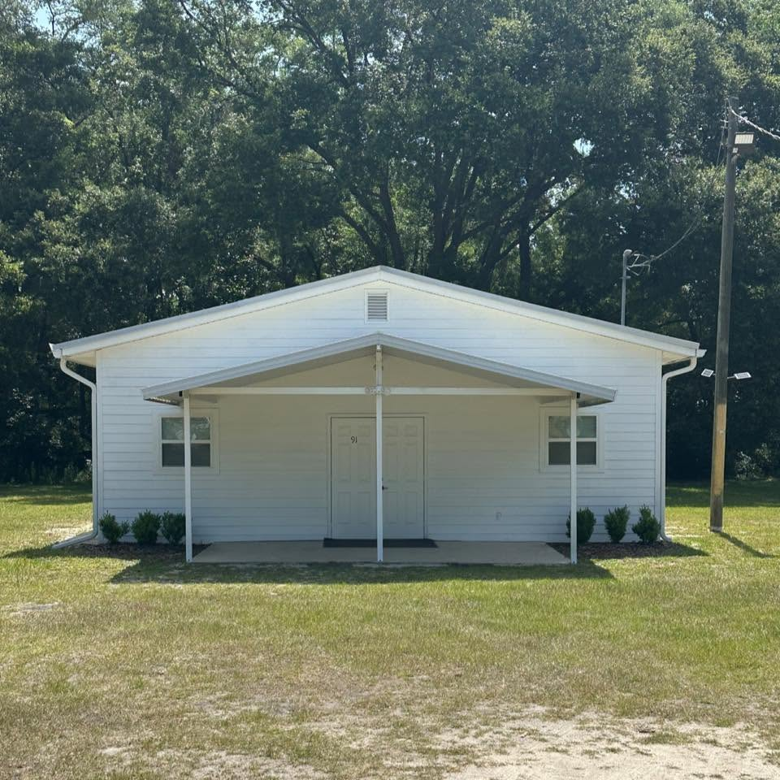

Sunday
- Bible Study9:00 AM
- Morning Worship10:00 AM
- Evening Worship5:00 PM
Newberry, Florida
We are a family of Christians seeking to follow the New Testament in faith, worship, and life. Wherever you are on your journey, there is a seat for you this Sunday.

Join Us in Worship & Study
Who We Are
Westside church of Christ is a family of individuals and families in Newberry, Florida seeking closer relationships with God and with each other. We use the word family because each member is a brother or sister in Christ. We are not perfect people or a perfect family. We simply seek to bring Christ into our lives and allow Him to mold and use us to God’s glory.
We have no allegiance to any religious body, only to Christ, and we are not governed by any outside organization. Following the Biblical example, we look to the New Testament for our practices, worshiping God as the early churches did, teaching as they taught, and being what they were: followers of Christ committed to bringing His gospel message to the world.
Plan your visit →Congregational singing from the heart, just as the New Testament describes.
Clear, book-chapter-and-verse lessons for every age and stage.
A close, friendly congregation that loves to welcome newcomers.
What We Teach
We are theologically conservative, guided by a strict adherence to New Testament authority, seeking “book, chapter, and verse” for our worship, work, and organization.
The New Testament is our only guide. We look for book, chapter, and verse to authorize what we teach and how we worship, work, and organize.
We do not use mechanical instruments in worship. The New Testament specifies singing, by both command and example, so we sing from the heart.
The Bible teaches that baptism by immersion is necessary for salvation and for the forgiveness of sins.
We do not use church funds to support outside institutions such as orphanages, colleges, or missionary societies. As individuals, we certainly can and do support good works.
A Clear Distinction
The church that Jesus established engaged only in the spiritual activities He authorized. Recreation, entertainment, and social activities are the good and proper role of the family, not the collective work of the church.
Authorized, spiritual, and centered on worship.
Good and proper, but for the home, not the assembly.
Plan Your Visit
You will find friendly faces, a welcoming atmosphere, Bible classes for all ages, and no pressure. Just come and worship with us. Here is what to know before your first visit.
Get in Touch
We are glad to answer any questions about the congregation, our services, or the Bible. Interested in a private Bible study? Reach out anytime, or simply stop by this Sunday.